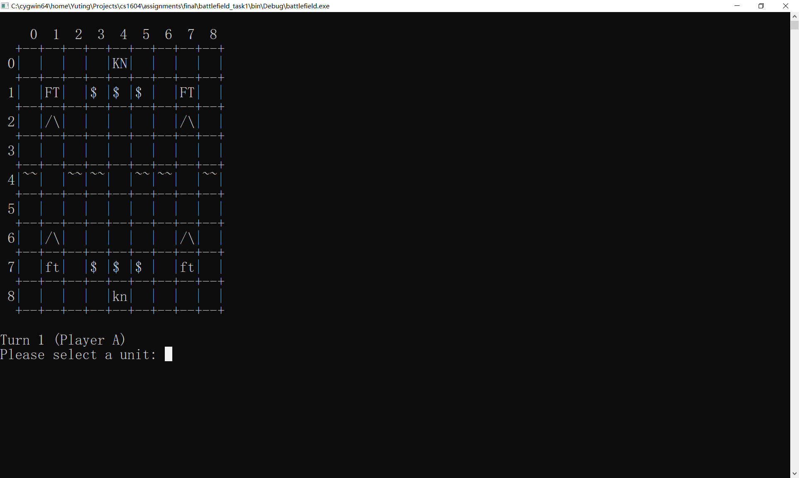

Battlefield
基本介绍
Battlefield是一个回合制战棋类游戏。在M x N的战场(Field)上（M为战场高度，N为战场宽度），Player A和Player B交替操作自己控制的单位(Unit)移动和攻击对方单位，如果一方的单位全部被消灭，那么对方将获胜。下图显示了一个11 x 11的战场，其中大写字母代表的是Player A的单位，小写字母代表Player B的单位，/\、~~、$等格子代表特殊地形（详见之后介绍）。这些图片显示了前两回合的游戏进程：第一回合，Player A将坐标(1,5)的骑士单位(Knight，简写为KN)移动到坐标(5,5);第二回合，Player B将坐标(8,4)的步兵单位(Footman，简写为FT)移动到(6,5)，并攻击(5,5)的骑士将其消灭。游戏将由两位玩家交替进行下去，直至一方胜利。


你的任务（20分）
该游戏由C++编写，其基本框架已经搭建完毕并提供给你，但是还有许多关键的功能没有实现，你需要实现这些功能，并通过所有的测试案例。注意，通过所有测试案例可以拿到全部的基础总分（共30分），但最终的大作业成绩还取决于能否通过隐藏测试案例，为了保证你能通过隐藏测试案例，你需要使用我们提供的参考程序(demo)，对标自行测试各种边缘情况，你的测试考虑周到与否将决定你是否能通过隐藏测试案例。
我们提供的文件结构如下：
xxxxxxxxxxjudger_student|- readme // 本说明文档|- battelfield // 提供的程序框架|- judger.py // 测试用Python脚本|- source // 各个任务源程序的位置|- data // 各个任务测试用数据|- maps // 自行测试用地图|- demo // 参考程序
热身(0分)：阅读并理解程序结构
你首先需要对该项目的结构有基本的了解。游戏项目的源程序结构如下：
xxxxxxxxxxbattlefield|- main.cpp // 程序入口|- units.h // 单位类头文件（访问单位的接口）|- units.cpp // 单位类的实现）|- field.h // 战场类头文件（访问战场的接口）|- field.cpp // 战场类实现|- algorithms.h // 寻路算法头文件|- algorithms.cpp // 寻路算法实现|- actions.h // 单位行动的接口（移动，攻击等）|- actions.cpp // 单位行动的实现|- engine.h // 游戏引擎接口|- engine.cpp // 游戏引擎的实现（包括和用户交互）
其主要分为以下几个部分：
- 单位类的接口和实现 (
units.h和units.cpp)。定义了名为Unit的类代表出场单位，关键属性包括单位类型UnitType，单位所属的玩家side（其中side = true时单位属于Player A，否则属于Player B），以及单位在战场上的坐标（urow代表行，ucol代表列）。 - 战场类的接口和实现 (
field.h和field.cpp)。定义了名为Field的类代表战场，其有一个包含Unit指针的Grid容器units表示战场。如果units[i][j]==NULL，则说明坐标(i,j)没有单位存在，否则units[i][j]包含指向坐标(i,j)单位的指针。该类的关键成员函数包括：getUnit返回给定坐标的单位，setUnit设置某个坐标的单位，moveUnit将某个坐标的单位移动到另一个坐标，display打印当前地图到给定输出流（其中第二个可选参数指定哪些格子需要被打印为.以显示单位可移动范围）。 - 寻路算法的接口和实现 (
algorithms.h和algorithms.cpp)。定义了确定单位移动范围的寻路算法，本项目不需要你理解寻路算法是如何实现的，只需理解如何使用该算法。详见接下来的任务描述。 - 单位行动的接口和实现 (
actions.h和actions.cpp)。定义了单位行动对其他单位和战场的效果。包括定义了单位可以进行的动作(Action枚举类)，以及单位动作的实现函数(selectUnit选择单位，moveUnit移动单位等)。注意该部分代码不直接涉及和用户的交互，所有的用户交互应该在游戏引擎中实现。 - 游戏引擎 (
engine.h和engine.cpp)。定义了回合制游戏进行的主要循环过程，给定一个初始战场field，调用play函数开始游戏。具体实现中还包括如何和用户进行交互，推动游戏进行。其他的接口函数均为测试用函数，其中displayField显示当前战场，addFootman添加一个步兵单位到指定坐标。 - 程序入口(
main.cpp)。定义了一个初始战场，设定初始单位，并调用play函数开始游戏。
你需要在总体上掌握上述代码结构，为下面的任务打下基础。
任务1(8分)：单位移动、特殊地形、新类型单位，以及装载地图
该部分任务分为如下几个部分，你需要完成它们并通过所有测试。为了保证你能通过隐藏测试案例，你需要使用我们提供的参考程序自行测试边缘情况，任务一的参考程序在task1_complete文件夹下面。
1.1. 实现单位移动
在提供给你的代码中，单位移动功能由engine.cpp中的performMove发起。首先，该函数需要调用searchReachable寻路算法检查可以到达的范围。代码如下：
xxxxxxxxxxGrid<bool> grd =searchReachable(getFieldCosts(field), u->getRow(), u->getCol(), u->getMovPoints());
searchReachable的第1个参数是战场上每个格子需要消耗的移动点数。给定一个M x N的战场，getFieldCosts(field)返回M x N的整数Grid代表战场格子的移动点数消耗。第2和3个参数表示单位的坐标，最后一个参数代表单位可用的移动点数。我们假设Footman的移动力为3。searchReachable返回一个M x N的布尔值Grid grd。grd[i][j] == true当且仅当该单位的移动力能到达坐标(i,j)。 经过和用户交互后，performMove调用actions.cpp中的moveUnit函数实现移动，后者进一步调用Field::moveUnit成员函数实现移动。
当前move功能存在各种缺陷，导致游戏崩溃。例如，移动(2,2)处单位至(3,4)导致Assertion Failure。

你需要修改上述函数，使得移动命令能够正常工作。需要注意如下事项
- 一个格子如果已经有单位存在，那么无法移动到这个格子上。你可以假设这种格子将消耗巨量的移动力（如999点移动力）
- 在实现移动命令时，你需要考虑目的地坐标是否超出移动范围，是否有各种越界等等。
1.2. 实现特殊地形
在初始程序中，我们假设所有的地形都是平原(Plain)，每个平原格子消耗1点移动力（体现在getFieldCosts函数中将所有格子移动消耗都设置为1）。你需要实现一些特殊地形，并且将它们在地图上正确的显示出来（所有地形都显示为长度为2的字符串，如平原地形为2个空格）。这些新地形包括
- 高山(Mountain)。高山地形是不可穿越的，其移动力消耗为999，在地图上显示为
/\ - 深水(Water)。深水地形也是不可穿越的，其移动力消耗为999，在地图上显示为
~~ - 森林(Forest)。森林地形移动力消耗为2，在地图上显示为
$
实现地形需要修改getFieldCosts得到正确的移动力消耗值，使得寻路算法能够正常工作。例如在下图中，(8,4)的步兵移动力为3，因此可以通过(7,4)踏上(6,4)的森林（正好消耗3移动力）。但是他无法踏上(6,3)的森林（移动力不够）。
注意在修改显示地图的函数时，如果一个特殊地形上有一个单位，应该优先显示该单位。此外，在显示移动范围时，移动范围代表的.符号应该覆盖特殊地形。
1.3. 设计新单位
一开始我们只有一个单位类型步兵(Footman)。你需要添加一个新单位类型骑士(Knight)，该类型的唯二不同之处在于：
- 骑士的移动力为5(比步兵多2点)
- 骑士在战场上显示为
KN（或者kn）
为此，你需要修改units.h和units.cpp。
1.4. 装载地图
在初始程序中，我们在main函数中定义了一个固定的地图。你需要实现一个函数loadMap，从输入流中装载一个新的战场地图。该函数应该定义在engine.cpp中，其原型如下：
x#include <iostream>#include "field.h"// Load mapField* loadMap(std::istream& is);
给定一个提供地图信息的输入流is，该函数分配（使用new operator)并返回一个对应的Field对象。 其中，is可以绑定在cin上，也可以绑定在文件输入流上。该输入流提供的地图信息格式如下：
- 第一行
M N NT NU:代表当前战场大小为M x N，一共有NT个特殊地形（除平原），NU个单位 - 接下来
NT行特殊地形信息，每行格式为R C T，代表在(R,C)坐标有一个地形为T。T = W代表深水，T = M代表高山，T = F代表森林 - 接下来
NU行代表单位信息，每行格式为R C S U，代表在(R,C)坐标有一个类型为U的单位。其中U = FT代表步兵，U = KN代表骑士。S = A代表该单位为Player A的单位，S = B代表该单位为Player B的单位。
例如，下列输入描述了一个9 x 9的地图：
xxxxxxxxxx9 9 16 64 0 W4 2 W4 3 W4 5 W4 6 W4 8 W2 1 M2 7 M6 1 M6 7 M7 3 F7 4 F7 5 F1 3 F1 4 F1 5 F0 4 A KN1 1 A FT1 7 A FT8 4 B KN7 1 B FT7 7 B FT
其地图显示为： 
任务2(8分)：攻击和游戏终止
该部分任务分为如下几个部分，你需要完成它们并通过所有测试。为了保证你能通过隐藏测试案例，你需要使用我们提供的参考程序自行测试边缘情况，任务一的参考程序在task2_complete文件夹下面。
2.1 实现攻击命令
我们将给每个单位实现一个攻击命令。如下图所示，Player B选择(8,4)的骑士时将显示一个Attack指令，选择该指令将提示你选择攻击方向。一个单位可以攻击上下左右相邻的格子。如果攻击范围内没有单位，那么将显示No unit to attack ...。

除了原地攻击，一个单位还可以移动后攻击。如下图中，Player B首先将(8,4)的骑士移动至(5,4)，然后选择Attack指令，选择向上攻击，消灭了位于(4,4)的骑士。

你的任务是实现上述原地攻击和移动后攻击命令。最终程序的行为必须和参考程序的行为一致。需要注意以下几点：
- 移动之后不允许再次移动或者选择其他单位，只能使用当前单位攻击或者跳过当前回合(Skip)
- 记得检查各种边缘和越界情况，确保游戏不存在BUG或者崩溃。
2.2 游戏终止
当一方消灭所有对方单位时，这方将获胜，游戏终止。你需要实现游戏终止的检查，并输出“Congratulations! Player A/B has won!"，如下图所示：
任务3(4分)：远程单位和射击命令
现有的单位都是近战单位，我们要实现第一个远程单位：弓箭手(Archer)。弓箭手和步兵骑兵不同在于他/她只能射击(Shoot)上下左右相邻2格的单位（而Attack只能攻击相邻1格的单位）。下图中位于坐标(2,2)的弓箭手（表示为AR）射击了位于(2,4)的步兵，将其击杀（记住我们所有的攻击都不做敌我判定，因此可以伤害友军;)）。和近战攻击一样，允许移动后射击。
你的任务包括：
- 设计一个ARCHER类型的单位，该单位的移动力为3，显示为
AR或ar - 修改相应的文件，以支持Shoot命令，注意只有Archer能Shoot，其他单位只能Attack
- 注意检查各种边缘情况。
调试游戏
为调试游戏，你首先需要准备好一个地图，使用loadMap装载生成一个战场，然后在标准输入端输入命令，观察输出端的结果。主函数的示例结构如下：
xxxxxxxxxxint main(){string filename = "map.txt";ifstream ifs;ifs.open(filename.c_str());if (!ifs) {cout << "Cannot open the file: " << filename << endl;return -1;}Field* f = loadMap(ifs);if (f == NULL) {cout << "Failed to load map!" << endl;return -1;}play(*f, cin, cout);delete f;ifs.close();return 0;}
初始代码中以及准备好了2张测试地图map1.txt和map2.txt。你也可以设计自己的地图用于调试。
测试游戏
我们使用judger.py脚本做最终的测试，为此你需要将主函数改为从cin中读取地图及之后的用户命令，然后将结果输出到cout。每个任务我们准备了5个测试案例，放在data文件夹中。你的程序必须通过所有测试案例才能拿到对应任务的满分。每完成一个任务，你需要将battelfield目录下的代码拷贝到source目录下对应的任务文件夹中。特别注意本次作业使用StanfordCppLib，因此需要将编译StanfordCppLib产生的cs1604文件夹的绝对路径复制到source/cs1604.txt下，以让judger成功编译你的程序。
xxxxxxxxxxsource|- 1_task1| |- main.cpp| ...||- 2_task2| |- main.cpp| ...||- 3_task3| |- main.cpp| ...||- cs1604.txt (include the StanfordCppLib)
然后在Windows命令行中运行
xxxxxxxxxxpython judger.py -1 // 1 代表第1个任务，同理可测试2、3任务
如果测试通过，输出结果
xxxxxxxxxx[T1 c1] Correct[T1 c2] Correct...
如果测试不通过，则会显示输出不对应的地方。为了测试所有的结果，可以直接调用
xxxxxxxxxxpython judger.py
隐藏测试（10分）
本次大作业有一部分隐藏测试用来测试所有任务都完成的程序各种可能出现的极端情况，通过所有隐藏测试才可以得到满分。该隐藏测试将不会透露给学生，所以请特别注意自行测试各类边缘情况。自行测试的结果可以和参考程序相对比，参考程序在demo文件夹下面。有2个版本：
demo1.exe从map.txt中读取地图文件，然后和用户通过标准输入输出进行交互。demo2.exe从in.txt中读取地图文件和所有用户输入，将结果输出到out.txt。
前者用来做交互测试，后者用来做文件输入输出的对比测试。
提交文件格式
你需要提交的文件结构应该类似如下形式：
<your student number>.zip|- 1_task1| |- main.cpp| ...||- 2_task2| |- main.cpp| ...||- 3_task3| |- main.cpp| ...||- cs1604.txt (include the StanfordCppLib)